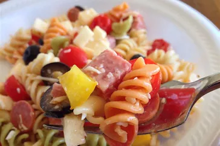

Awesome Potato Salad

Description
Pasta salad (pasta fredda) is a salad dish prepared with one or more types of pasta, almost always chilled, and most often tossed in a vinegar,
oil, or mayonnaise-based dressing. It is typically served as an appetizer, side dish or a main course.
Ingredients
- 1 (16 ounce) package fusilli (spiral) pasta
- 1 large green bell pepper, cut into 1 inch pieces
- ¼ pound sliced pepperoni, cut in half
- ½ pound salami, cubed
- ½ pound provolone cheese, cubed
- 3 cups cherry tomatoes, halved